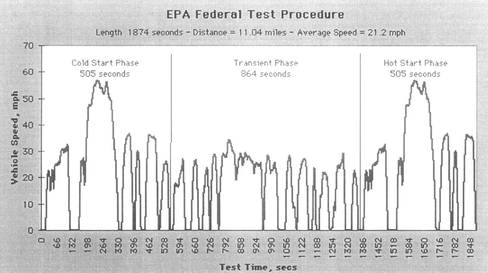
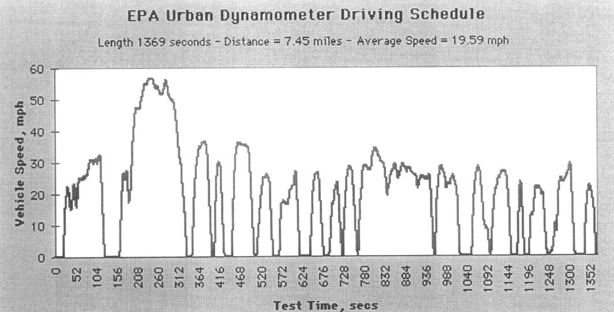

Readiness Code Generating (Generic Drive Cycle)
Readiness Code Resetting Procedure (Generic Drive Cycle)Readiness Monitors and Drive Cycles
"Readiness Monitors" are indicators that demonstrate whether or not emission system components are being monitored (checked) by the OBD-II system. If a monitor is set to "Ready" the monitor is checking its assigned component and, if no DTC's are present, the vehicle should pass an emissions test.
NOTE: If the appropriate number of Readiness Monitors (codes) are not flagged as "Ready", in most cases, the vehicle can not pass an emissions test. See State and Federal Laws.
The status of all readiness monitors is reset to "Not Ready":
Each time DTC's are cleared.
The battery is disconnected.
The ECM is disconnected.
The status of all readiness monitors is reset to "Ready":
After DTC's are cleared and the appropriate drive cycle(s) is successfully completed.
EPA Federal Test Procedure:

Manufacturers are required to validate monitors during the first 23 minutes (1372 seconds) of the Federal Test Procedure Drive Cycle.
EPA Urban Dynamometer Driving Schedule:

Completing the Drive Cycle successfully one (1) time should reset most drive cycle monitors to a "Ready" status. However, there are "two trip" monitors, which require that the drive cycle be successfully completed two (2) times, to achieve a "Ready" status. Furthermore, systems which use averaging, may require the drive cycle to be completed more than 2 times.
Verify the status of the readiness monitors with the appropriate function of your scan tool.
NOTE: Certain vehicles have known OBD-II Readiness issues. Please be sure to review TSB's for special circumstances and or exceptions to readiness monitor resetting procedures.
Before Beginning the Drive Cycle
Check the status of the Readiness Monitors, check for DTC's, correct faults, clear DTC's before beginning the Drive Cycle.
Begin Drive Cycle
The vehicle should be driven approximately 7.5 miles within a period of approx. 23 minutes (1372 seconds) from a cold start. However, due to manufacture variations, it is necessary to perform only as much of the Drive Cycle as is necessary to reset the required monitors to a "Ready" status. Operate the throttle smoothly to obtain best results. Do not shut the engine off during the drive cycle.
CAUTION: Obey all traffic laws and drive in a safe manner!
NOTE: Extreme driving conditioning such as very high/low temperatures, rough roads and high altitudes may prevent some monitors from attaining a "Ready" status.
Step 1 (Engine Cold) Start engine, idle 20 seconds. Accelerate gradually and drive at 20-25 mph for 1 minute, varying speed.
Step 2 Accelerate gradually to 32 mph within 35 seconds. Decelerate to 0 mph in 10 seconds. Idle for 40 seconds.
Step 3 Accelerate at part throttle to 25 mph in 10 seconds. Cruise at 17-25 mph for 15 seconds. Accelerate gradually to 57 mph in 45 seconds. Cruise at 50-56 mph for 1 minute. Decelerate gradually to 0 mph in 40 seconds. Idle for 15 seconds.
Step 4 Accelerate at part throttle to 36 mph and maintain for 10 seconds. Decelerate to 0 mph in 15 seconds. Idle for 5 seconds.
Step 5 Accelerate to 30 mph and back to 0 mph within 30 seconds. Idle for 20 seconds.
Step 6 Accelerate to 36 mph in 20 seconds. Drive at 35 mph for 20 seconds. Decelerate to 0 mph in 15 seconds. Idle 5 seconds.
Step 7 Accelerate gradually to 26 mph and decelerate to 0 within 40 seconds. Idle 15 seconds.
Step 8 Accelerate to 27 mph in 40 seconds. Decelerate to 0 mph in 10 seconds. Idle 25 seconds.
Step 9 Accelerate to 26 mph in 15 seconds, maintain speed for 10 seconds, decelerate to 0 mph in 10 seconds. Idle 15 seconds.
Step 10 Accelerate to 23 mph in 20 seconds, decelerate to 0.5 mph in 10 seconds (no complete stop). Accelerate to 28 mph and back to 0 mph (momentary stop 1 second) within 35 seconds.
Step 11 Accelerate gradually to 34 mph in 45 seconds. Vary speed between 34 and 19 mph for 2 minutes. Decelerate from 25 to 0 mph in 25 seconds. Idle for 5 seconds.
Step 12 Accelerate to 29 mph in 15 seconds, decelerate gradually to 0 mph in 45 seconds. Idle for 30 seconds.
Step 13 Accelerate gradually to 28 mph and back to 0 mph (momentary stop 1 second) within 50 seconds. Accelerate gradually to 27 mph and back to 0 mph within 55 seconds. Idle for 15 seconds.
Step 14 Accelerate to 24 mph and back to 0 mph within 18 seconds. Idle for 10 seconds. Accelerate gradually to 22 mph and back to 0 mph within 50 seconds. Idle for 8 seconds.
Step 15 Accelerate gradually to 30 mph within 50 seconds. Decelerate to 0 mph in 10 seconds. Idle for 25 seconds.
Step 16 Accelerate to 23 mph and back to 0 mph within 30 seconds. Idle for 10 seconds.
Step 17 Repeat steps 1 - 16 once again. Recheck the status of the "Readiness Monitors".
NOTE: Remember, clearing DTC's or interrupting power to the ECM after the readiness monitors have been reset to "Ready" will require that the Drive Cycle be repeated.
Completing the Drive Cycle successfully one (1) time should reset most drive cycle monitors to a "Ready" status. However, there are "two trip" monitors, which require that the drive cycle be successfully completed two (2) times, to achieve a "Ready" status. Furthermore, systems which use averaging, may require the drive cycle to be completed more than 2 times. It is necessary to perform only as much of the Drive Cycle as is necessary to reset the required monitors to a "Ready" status.
End Drive Cycle